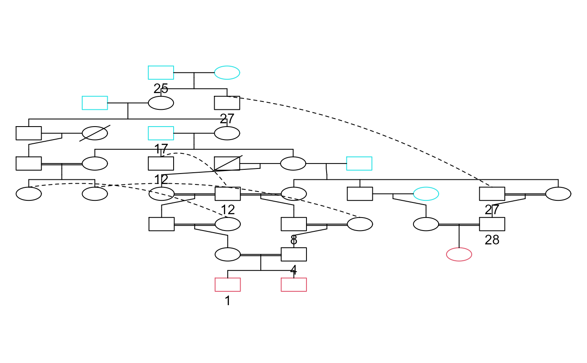
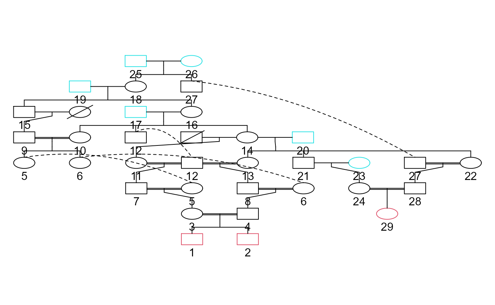

gen.simuSet.RdReturns the number of alleles transmitted to specified probands from ancestors considering sepcified transmission probabilities.
gen.simuSet(gen, pro, ancestors, stateAncestors, probMatrix=matrix(c( c(1,0.5,0,0.5,0.25,0,0,0,0,1,1,1,1,0.75,0.5,1,0.5,0), c(1,0.5,0,0.5,0.25,0,0,0,0,1,1,1,1,0.75,0.5,1,0.5,0)), nrow=3, ncol=12), simulNo = 5000)
| gen | An object of class GLgen obtained with gen.genealogy, gen.lineages or gen.branching. Required. |
|---|---|
| pro | Vector of proband id numbers to be included. Required. |
| ancestors | Vector of ancestors id numbers to be included. Required. |
| stateAncestors | Required vector indicating, for each ancestor in ancestors, the genotype state: 0 = no disease allele present 1 = 1 disease allele present 2 = 2 disease alleles present |
| probMatrix | Matrix of transmission probabilities of 0, 1, or 2 disease alleles. Default is: [,1] [,2] [,3] [,4] [,5] [,6] [,7] [,8] [,9] [,10] [,11] [,12] [1,] 1.0 0.50 0 1 1.00 1.0 1.0 0.50 0 1 1.00 1.0 [2,] 0.5 0.25 0 1 0.75 0.5 0.5 0.25 0 1 0.75 0.5 [3,] 0.0 0.00 0 1 0.50 0.0 0.0 0.00 0 1 0.50 0.0 where rows are genotype states (0,1,2) for the father and columns are states for the mother (in blocks of 3). 1st block (col 1-3) are the probabilities of transmitting 0 allele to a son. 2nd block (col 4-6) are the probabilities of transmitting 1 allele to a son. 3rd block (col 7-9) are the probabilities of transmitting 0 allele to a daughter. 4th block (col 10-12) are the probabilities of transmitting 1 allele to a daughter. |
| simulNo | Number of simulations to perform. Default is 5000. |
A matrix with number of columns equal to the number of simulations and number of rows equal to the number of probands.
# A case where only male subjects can receive alleles data(geneaJi) genJi<-gen.genealogy(geneaJi) onlyThroughMale<-matrix(c(c(1,0.5,0,0.5,0.25,0,0,0,0,1,1,1,1,0.75,0.5,1,0.5,0), rep(1,18)), nrow=3, ncol=12) gen.graph(genJi, indVarAffected=c(28,27,25,17,12,8,4,1), varAffected=c(28,27,25,17,12,8,4,1))simu_1000a<-gen.simuSet(genJi, pro=c(1,28), ancestors=c(17,25), stateAncestors=c(1,1), simulNo = 1000,probMatrix=onlyThroughMale) # Number of alleles received by probants table(simu_1000a)#> simu_1000a #> 0 1 #> 1679 321#> #> 0 1 2 #> 699 281 20#> #> 0 1 #> 0 699 233 #> 1 48 20# A case where subjects are limited to one copy compared to what is normally expected max1Allreceived<-matrix(rep(c(1,0.5,0,0.5,0.25,0,0,0,0,1,1,1,1,1,1,1,1,1), 2) , nrow=3, ncol=12) gen.graph(genJi)simu_1000b<-gen.simuSet(genJi, pro=c(1,29), ancestors=25, stateAncestors=1, simulNo=10000, probMatrix=max1Allreceived) # Normal case matrix not changed simu_1000original<-gen.simuSet(genJi, pro=c(1,29), ancestors=25, stateAncestors=1, simulNo=10000) # Number of alleles received by each probant table(simu_1000b)#> simu_1000b #> 0 1 #> 17630 2370#> simu_1000original #> 0 1 2 #> 17493 2320 187#> #> 0 1 2 #> 7812 2006 182#> #> 0 1 2 3 4 #> 7726 1903 323 47 1#> #> 0 1 #> 0 7812 1293 #> 1 713 182#> #> 0 1 2 #> 0 7726 1250 26 #> 1 653 185 12 #> 2 112 35 1